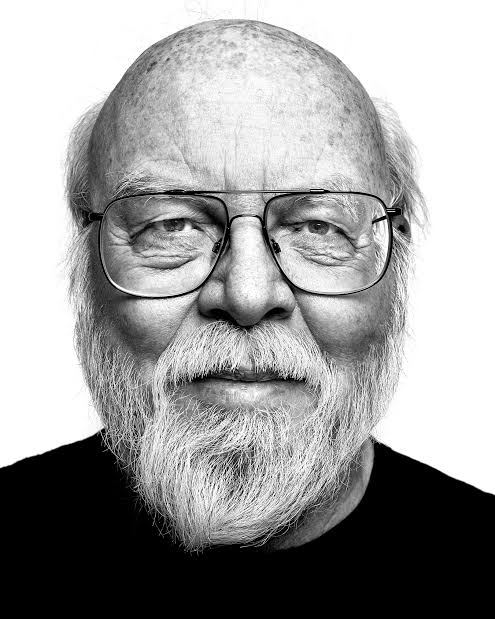

Введение

В 1977 году окончил университет Калгари со степенью бакалавра информатики, и в 1983 году получил степень доктора в университете Карнеги-Меллон. Тема диссертации „The Algebraic Manipulation of Constraints“.
С 1984 года работал в Sun Microsystems.
2 апреля 2010 года уволилсяиз Sun Microsystems после того, как она была поглощена корпорацией Oracle. В качестве причины своего ухода Гослинг назвал «плохое отношение нового руководства к разработчикам Java», а также намерение Oracle понизить его зарплату.
С 28 марта 2011 года Джеймс Гослинг начал работать в Google.
В конце августа 2011 года в новостных лентах прошло сообщение, что Гослинг покинул интернет-гиганта и перешёл работать в стартап, небольшую фирму Liquid Robotics, которая занимается разработкой робототехники для исследования океана. Гослинг занимал должность главного архитектора программного обеспечения.
22 мая 2017 года уходит из Boeing Defense (бывшая Liquid Robotics) и начинает работать в Amazon Web Services.
Чем более надёжное программное обеспечение вам требуется, тем больше подходит язык со статической типизацией- Джеймс Гослинг на интервью
Информация
Самые популярные:
- Биография
- Основные изобретения
- Интересные факты
- Список терминов